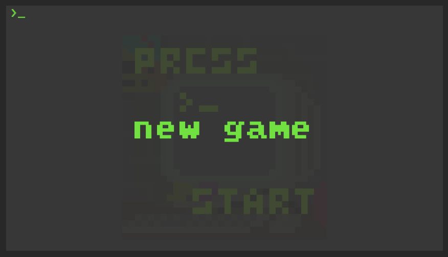
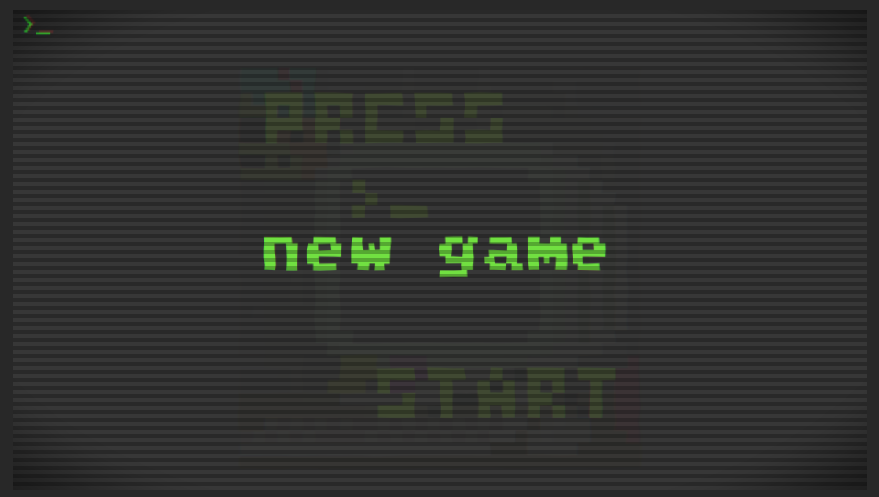
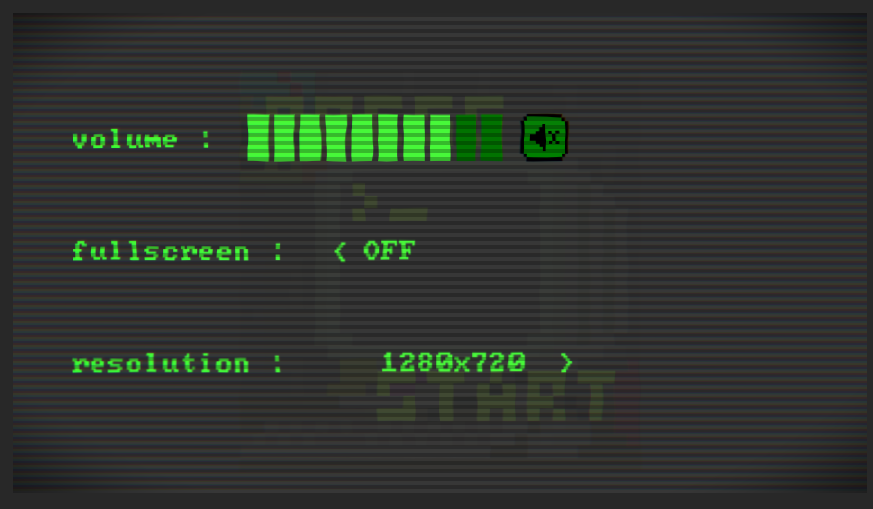
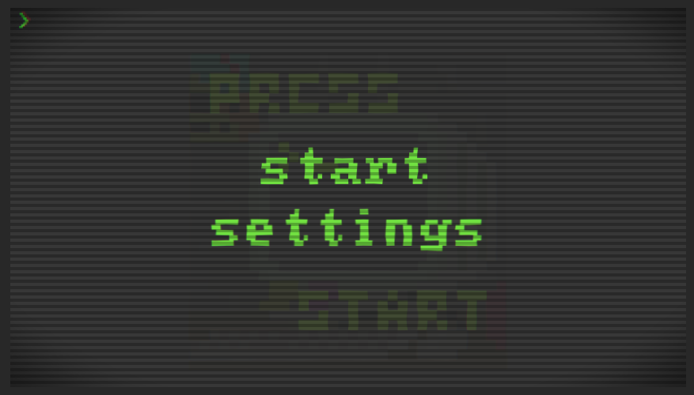
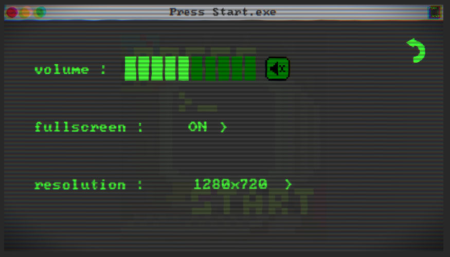
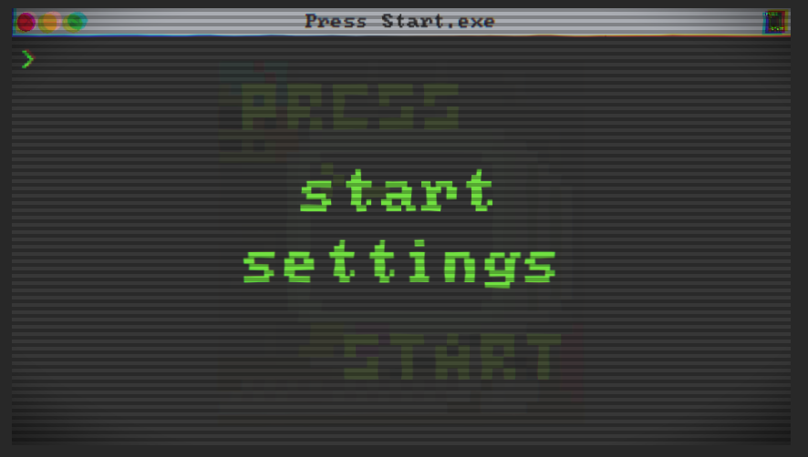
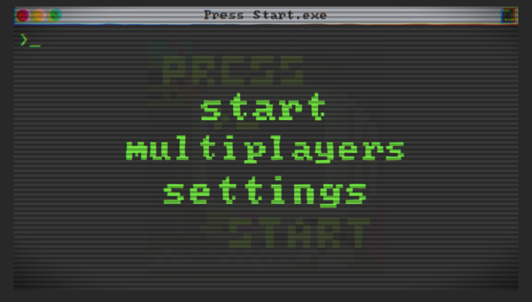
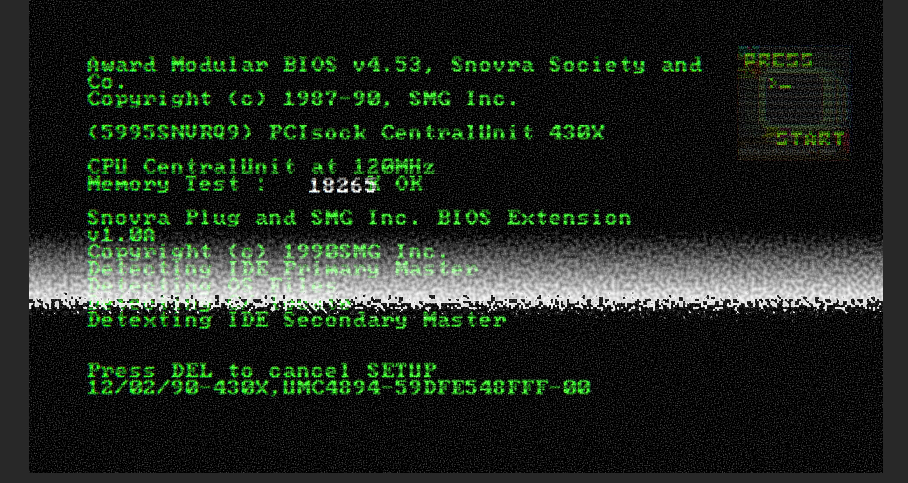

<!DOCTYPE html>
    <html>
        <head>
            <meta charset="utf-8"/>
            <link rel="stylesheet" href="Screens.css">
            <title>Press Start</title>
        </head>

        <body>
            
            <h1>La programmation</h1>
            
            <div class="content">
                <h2>Anouar s'est occupé : De l'écran de lancement, de l'écran titre, des settings, du site web et des mouvements</h2>
            <h2 class="Martin">Martin s'est occupé : De l'IA, des armes, du multi et des ennemis</h2>
                <h2>Pour la première soutenance</h2>
                <p>Pour le code on a voulu juste faire une scène ou un personnage peut se déplacer et 
                    sauter, on aurait voulu implémenter plus d’options de mouvements mais on n’a pas pu.
                    Anouar et Martin ont rencontré pas mal de difficultés mais après de nombreuses recherches 
                    et tutoriels sur YouTube, on est arrivé à faire un personnage qui peut sauter, se déplacer et 
                    regarder dans la direction où il va.</p>
                <h2>Pour la première soutenance</h2>
                <p>
                    Pour le code, Martin a implémenté le système d’arme, où l’arme tourne autour du joueur et se pointe vers le curseur à chaque instant. Le mouvement
                        du joueur et la visée ne se dépendrons pas entre eux. Il a donc commencé
                        par implémenter le pistolet assez simple. Il peut tirer vers le curseur et c’est
                        à peu près tout pour l’instant.
                        De plus, Anouar a travaillé pour enrichir le panel de mouvement. On
                        peut maintenant sauter, escalader, faire des sauts muraux, faire des doubles
                        sauts, et dasher ce qui incite le joueur à bouger partout.</p>
                        <h2>Pour la soutenance finale</h2>
                        <h3>
                            On a fait ce qu'on a pu.</h3>
                <h2>Evolution des différents écran de début</h2>
                
                
                
                
                
                
                
                
            </div>

        </body>
    </html>